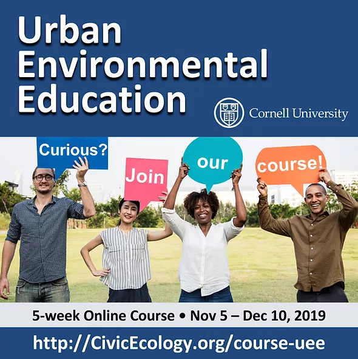
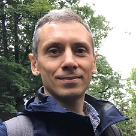
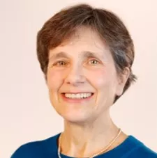

"Urban Environmental Education" online course
About the Course
Urban environmental education includes any learning practices that foster individual and community well-being and environmental quality in cities. Similar to how cities are innovation hubs, urban environmental education generates novel educational approaches that advance the field of environmental education more broadly. Urban environmental educators and their programs can benefit by adapting ideas from inspirational examples of other urban environmental education programs, and from recent research in this field.
In this course, you will learn about UEE, including: (1) urban contexts; (2) theoretical background, (3) educational settings, (4) participants, and (5) educational approaches in urban environmental education. The course is offered by the Cornell University’s Civic Ecology Lab (https://civicecology.org), and based on cutting-edge ideas from the “Urban Environmental Education Review” book (https://www.cornellpress.cornell.edu/book/9781501707759/urban-environmental-education-review).
Course Content
- Week 1. Introduction and urban context
- Course introduction, and meeting other participants
- Advancing urbanization
- Sustainable cities
- Rapidly growing cities
- Cities as opportunities
- Week 2. Theoretical underpinnings
- Environmental justice
- Sense of place
- Climate change education
- Community assets
- Environmental governance
- Week 3. Educational settings
- Nonformal educational settings
- Community environmental education
- School partnerships
- Sustainable campuses
- Week 4. Participants
- Early childhood
- Positive youth development
- Adult education
- Inclusive education
- Week 5. Educational approaches, and course project
- Cities as classrooms
- Environmental art
- Adventure education
- Urban agriculture
- Ecological restoration
- Green infrastructure
- Urban digital storytelling
- Participatory urban planning
Course Instructors
 Alex Kudryavtsev, Research Associate, Cornell University http://AlexRuss.org
Marianne Krasny, Professor, Cornell University https://dnr.cals.cornell.edu/people/marianne-krasny
Yue Li, Research Associate, Cornell University http://yueyuelee.me Course email: CivicEcology@cornell.edu
Learning Outcomes
In this course, participants will choose their learning goals:
1. Explore theories, terminology, practices, issues and opportunities that define urban environmental education.
2. Describe your own program’s settings, goals, and participants.
3. Outline how you can apply urban environmental education research and practice ideas to your own educational program.
4. Compare and contrast various educational approaches and settings in urban environmental education.
5. Learn to critique and evaluate urban environmental education programs and related research.
6. Produce new or original materials or activities related to urban environmental education.
7. Expand your network of urban environmental educators.
Frequently Asked Questions
1. What is the course email? CivicEcology@cornell.edu (Please write “UEE course” in the subject line.)
2. Why do you have three types of enrollment for different fees? We are committed to creating equal access to the course materials and to instructor feedback regardless of where a student lives or his/her ability to pay. Students can pay a reduced fee or not pay if they they do not have systems to transfer funds to the U.S. (e.g., Afghanistan, Iran, Somaliland) or because the basic $60 fee is beyond their reach (e.g., you are experience economic hardship). Most course participants pay $60, which enables us to develop and run online courses. We are grateful for your support!
3. If I pay $120, can I link with the student I sponsor? No, we would like to keep who pays and who doesn’t pay anonymous. However, you will be able to connect with students from many different countries through the course social media.
4. Can I sponsor more than one student? Yes, we would be grateful for your support of other students, especially in developing countries, who otherwise cannot afford paying for this course.
5. How long is the course? This is an 5-week course with two additional weeks to complete the course project. For the course project, you will write a 1-page course project in which you will outline an urban EE activity – which you can conduct after the course, and which is based on ideas you learned in this course. After completing course assignments, you will receive an Cornell Certificate.
6. Can I submit the course project in my native language? We strongly encourage you to submit all assignments in English so that instructors and other students can give you feedback. Chinese students can submit lesson plans in Chinese or Spanish because we have teaching staff who speak these languages.
7. How will I receive course certificates? You will receive your course certificate via email no more than two months after the end of the course.
8. What social media are used in this course? We use an optional Facebook, WhatsApp, and QQ group – where students and instructors share ideas and resources. Only course participants can be part of these groups, please do not invite people outside this course.
9. Can I share course materials with my colleagues and friends? You are NOT allowed to share, copy, distribute, or forward any materials from this course. They are only for your own learning.
10. Can I use this course for teaching my own students in a college or university? Please contact the Civic Ecology Lab.
11. I noticed that this course includes 25 chapters from the Urban Environmental Education Review book. Where can I access the remaining five chapters? The “Urban Environmental Education Review” book contains a total of 30 chapters. To read all 30 chapters, you can purchase the hard copy of the book from Cornell University Press (this website also has the Table of Contents): https://www.cornellpress.cornell.edu/"